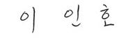

Welcome Message
K-SURE, the trusted safety net for Korean trade, investment and finance
Good morning, I am Inho Lee, Chairman and President of Korea Trade Insurance Corporation (K-SURE).K-SURE is a policy financial institution, providing its quarantee and insurance to facilitate Korean export and overseas investment. By doing so, K-SURE has contributed to strengthening Korea's national competitiveness and economy since it was established in 1992. I believe now is the time to prepare to help Korean companies flexibly respond to the rapidly- changing external environment and further strengthening our global competitiveness.
First of all, K-SURE will maintain our leadership by innovating Korea's export
structure.
We will expand market presence by exploring new markets. Also, we will be committed to fostering new
industries.
Our support to Korea's small and mid-sized companies will be more solid and
practical.
K-SURE will provide them with customized programs they can feel the benefit of. We will provide a
fine-tuned approach for their different needs and wants so that they have high enough export
competitiveness in the global market.
Also, we will put our effort to upgrade our trade insurance from the customer's
perspective.
We will continue to pay close attention to changing customer needs, developing trade insurance that
adds value to them.
As a member of global community, let us help ensure a bright future for the world
and give our all to
create the environment in which all of us care for each other and share the burdens ahead of us.
Also, armed with a trusted trade, investment and financial safety net, K-SURE
will support Korea to make great strides toward being a qlobal powerhouse in trade.
Thank you for your constant support to K-SURE and look forward to your continued
trust in our company.
Thank you.
Chairman and President Korea Trade Insurance Corporation
